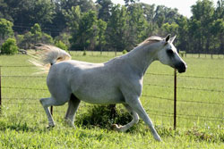

|
Congratulations to Amy McCormick of Shreveport, Louisiana on her purchase of VA WIZDOM (MCA Chazz X Wisdoms Starlight). This is Amy's first Arabian!!!
Congratulations to Karen Coats of Missouri /City, Texas on her purchase of VA Showentell (Entell X Ladyeanin by Marisianin). She plans to use this gorgeous gelding as a western pleasure show horse. Best of luck to her with this wonderful gelding.
VA Chazzanin
Congratulations to Dr. Kris Anderson, DVM of Santa Fe, Texas on her purchase of the beautiful MCA Chazz filly VA CHAZZANIN. She is a lovely filly started under saddle that Kris purchased to be an endurance horse. Kris already owns two MCA Chazz daughters, Chazzana MTA and Chazzabelle MTA. Kris also purchased a lovely chestnut BASKHAZI III yearling filly, (Baskhazi III X TM Carabella(by MCA Cardigan),registration pending. Congratulations!!!!!

VA Wiszki
(MCA Chazz x Wisdoms Starlight)
Congratulations to Edna Fannin from Keithville, Louisiana on her purchase of VA Wiszki. She had been looking for her 'match' for a while and fell in love with Wiszki. He will be her companion and trail riding/pleasure gelding and what a 'pleasure' he is says Edna!!!
Ladyeanin
(*Marsianin x Princess Drift)
Congratulations to the Jacob family of Rosharon, Texas on their acquisition of this lovely mare for their daughters Joy and Jenna to show.
Congratulations of Emilio Olvera and his family on their purchase of VA Chazz Quintina. They have two lovely daughters and a son that love to ride and this will be their first Arabian! They also plan to breed her to Baskhazi III!
Congratulations to Paul Sidio, from Spokane, Misouri on his purchase of this lovely MCA Chazz daughter VA Chazz Chianti! I believe he plans to use her for an endurance mount. Paul also purchased three Chazz geldings at the same time.... VA Rhazzberry Bey, VA Chazz Cabernet, and VA Beaujolais Chazz. This will be the 6th Chazz offspring Paul has purchased. He also owns KMA Chazz Piper and VA Southern Gentleman and between these two horses Paul has completed ten 100 mile rides including the TEVIS! Thanks Paul!
Congratulations to Leah Johnson of Quitman, Texas on her purchase of VA Flaming Ember. She will be using him as a beautiful show horse!
Congratulations to Joyce Jacob of Rosharron Texas on her purchase of VA Elegantlei.
Congratulations to Sky Gray, ACT III farms, on his purchase of SS All Chazzed Up, a beautiful MCA Chazz Daughter that he will be now be using in his Riding Program.
Congratulations to Yvonne Wittenmauer from Biloxi Mississippi on her purchase of the beautiful Chazz filly , VA Chazz Wistara. Yvonne also purchased a 3 year old chestnut gelding by Baskhazi III. She plans on riding the trails with both of them and possibly using Wistara as a broodmare. Congrats Yvonne!
Congratulations to Dr. Allye Whyte from Shreveport Lousiana on his purchase of Mamselle Cognac. This is Dr. Whyte's first horse and he plans to learn to ride. Good luck to him!
Congratulations to Barbara Moody on her purchase of VA Passionate Lei (LF Redd Baronn X Passionatelei III(MCA Chazz), a beautiful young mare. She plans to enjoy her in Hunter Pleasure and as a broodmare."
Congratulations to Joe Brown and Kelsi Foucheaux from Pearland, Texas on their purchase of VA Jhazz Dance to be shown in English Pleasure in 2011.
Congratulations to Kay Conditt from Ohatchee, Alabama on her purchase of VA Chazzanna Nicole. She plans to show her Half-Arabian Saddle Type Halter and possibly Country English Pleasure in the future.
Congratulations to Kristi Renee Herbst from Farmington, Missouri on her purchase of Baronns Salace in foal to Baskhazi III for 2011 foal.

Congratulations to David A. Brothers from Bardstown, Kentucky on their purchase of VA Bold Marquis in foal to Baskhazi III for 2011 foal.
Congratulations to Brenda Aiken Sweeney from Watertown, Tennessee on her purchase of RLF Lady Quista.
Congratulations to Nannett and daughter Lindsey O'Connor on their purchase a the beautiful gelding VA Jabaskghazi. Look for Lindsey in Amateur Country English Pleasure JOTR!
Congratulations to Vicky Vaughn, North Fork California, on her purchase of Ladyeanin in foal to MCA Chazz for 2010.
Congratulations to Joyce Jacob and family of Rosharon, Texas, on their purchase of VA Elegantlei and a Baskhazi breeding for a 2010 foal!
Congratulations to Kerry Kelly on her purchase of VA Fleur De Lei, a beautiful mare, that she will be showing in Hunter Pleasure this year.
|